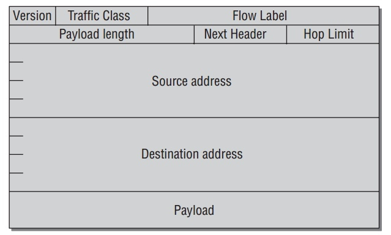

Network layer
Table of Contents
Network access layer仍然受传输媒介和适配器相关的驱动程序.Network layer(特指IP协议)几乎脱离网络适配器的硬件属性.为什么是几乎? 因为,这一层不仅负责发送和接受数据,而且同时在不互相连接的系统中转发和路由包.找到最好的路由和选择合适的网络设备来发送包同样涉及处理底层地址(比如硬件特定MAC地址).
大包的fragmentation到小包不能进行如果不知道底层硬件特性.分包的大小由特定传输协议能力决定.
IP在1981年(RFC 791)定义,因为是很久远的产物.缺陷和不可预见的问题发生随着Internet的强力成长越来越明显.所以IPv6标准被发展出来取代如今的IPv4. 这里主要分析V4的算法实现,并稍微分析一下V6.IP协议细节了解:
- W. Richard Stevens. Programmieren von UNIX- Netzwerken. Hanser, 2000.
- W. Richard Stevens. TCP/ IP Illustrated I. The Protocols. Addison-Wesley, 1994.
IPv4
IP包使用如下协议头:

- version指定IP协议版本.现在此值是4或6.
- IHL定于头的长度.因为不同的配置一般不同.
- Codepoint/Type of Service为更复杂的协议选项.
- Length指定 总 的包长.也就是,包括头和数据长度.
- fragment ID指定一个被分包的IP包的单个部分.分包程序赋值给原包的所有部分同一个fragment ID,以致她们能被识别为同一组的成员.相对位置由 fragment offset字段定义.
- 3个状态bit(flag)打开或关闭特定特性:
- DF 是 don't fragment的缩写,表明此包不能被分成小包.
- MF 表明当前的包是一个大包的分片,并且之后还有其他的分片.
- 第3个域是"reserved for future use".
- TTL是Time to LIVe的缩写,指定路由到接收端所经历的中间节点数.
- Protocol指定IP包中上层协议.比如TCP和UDP的唯一值.
- Checksum以header和data的内容计算而来.
- src和dest指定32-bit的source和destination的IP地址.
- options用来扩展IP的选项.
所有在IP头中的数字值必须network byte order(big endian).
在kernel代码中头部由数据结构 iphdr 实现:
//include/linux/ip.h #if defined(__LITTLE_ENDIAN_BITFIELD) __u8 ihl:4, version:4; #elif defined (__BIG_ENDIAN_BITFIELD) __u8 version:4, ihl:4; #endif __u8 tos; __be16 tot_len; __be16 id; __be16 frag_off; __u8 ttl; __u8 protocol; __sum16 check; __be32 saddr; __be32 daddr; /*The options start here. */ };
ip_rcv 函数是进入network layer的入口点.在kernel中,一个包的路由图如下:

发送和接收操作并不总是分开,会交织在一起如果包只是通过电脑转发.
Receiving Packets
当包到达 ip_rcv 后,一些信息会检查确保它是正确的.之后,kernel并不立刻继续处理包,而是允许netfilter hook被调用,来让数据包在userpace被处理.Netfiler hook是被在kernel代码中某些点插入的hook来是的动态的处理包.
当到达hook,注册此hook的处理在userspace被调用.Kernel端然后继续处理这个包.之后,收到的IP包到达交叉路口,需要决定包是发送往本顶系统还是远程电脑.
ip_route_inpu 负责选择路由.相对复杂的这个决定在之后分析. 之后进行的函数是 ip_local_deliver 和 ip_forward .
- Local Delivery to the Transport Layer
当包发往本地电脑,
ip_local_deliver必须找到合适的transport layer 函数来处理.IP包通常使用TCP或UDP作为 transport layer. - Defragmentation
因为IP包是可以被分包的,使得不能马上确认一个完整的包收到.因此第一个任务是使用函数
ip_defrag组装一个被分片的包.相应的代码流程如下:
kernel在一个独立的cache中管理原本大包的分片,这个cache被成为 fragment cache . 比如
net->ipv4.frags(ip_fragment.c). 在此cache中,属于一起的分片在独立的一个等待队列中知道所有分片齐全.ip_find被调用去寻找分片等待队列.它使用一个涉及fragment ID,起始和目的地址,和包协议标示的hashing来确认这个包的等待队列是否已存在.如果没有, 一个新的队列创建并把此包放在里面. 通过ip_frag_queue能把包放如队列.ip_frag_queue放如新包后,并检查包的所有分片是否都在cache中,调用ip_frag_reasm来组装分片.如果包的所有分片没有都到达,
ip_defrag返回一个非空的错误值来结束IP层包的处理.但所有分包都达到时继续处理. - Delivery to the Transport Layer
ip_local_deliver处理完分包后,调用hook函数后继续调用ip_local_deliver_finish.包被传递到transport layer函数前需要确定协议是啥来调用相应协议的处理函数.所有基于IP层的协议都有一个
net_protocol数据结构的实例:struct net_protocol { int (*handler)(struct sk_buff *skb); void (*err_handler)(struct sk_buff *skb, u32 info); .. };
handler是被传递包的协议处理函数.err_handler被调用当收到ICMP error信息时并需要传递到上层.
在函数
inet_add_protocol中,通过hash方法把各个协议映射到数组inet_protos中的单一条目下.找到相应的协议
inet_protocol,并调用其中处理函数handler.至此包从 IP层被传送到更高层处理.比如tcp_v4_rcv函数接收TCP包,udp_rcv接收 UDP包.
Packet Forwarding
IP 包可以如上传递到本地,或它们离开IP层转发到其他电脑,不再与本地上层协议交互. 有2类包的目的:
- 目的电脑与这发送电脑在同一个本地网络.
- 远程电脑不在本地网络,只能通过网管通信.
第二种情况相对复杂.转发包路由途中将发往的第一个站点必须找到以致离最终目的进一步.所以不单单需要电脑所处的网络结构信息,还需要相邻的网络和附加的出口路径结构信息.
这些信息由kernel维护的 路由表(routing tables) 提供.函数
ip_route_input 被调用当一个包以路由的形式收到,不仅仅它被识别为本地传递或转发,并且找到去目的的路由.目的存储在socket buffer的字段 dst 中.
转发函数 ip_forward 如下:

先检查TTL值允许被传递到下一个hop. 若可以, ip_decrease_ttl 把TTL减1并更新包的checksum.
一旦 NF_INET_FORWARD 被调用完,kernel继续在 ip_forward_finish 中处理,这个函数跳转到另外2个函数:
- 如果包包含其他的参数(一般不会这种情况),它们被
ip_forward_options处理. dst_output把包交给路由发送函数,这个函数在skb->dst->output中. 一般ip_output用作此目的, 把包发送到与目的相符的网络适配器.ip_output是IP层的发送操作,下一节分析.
Sending Packets
kernel提供很多个函数来让上层协议发送数据通过IP层. ip_queue_xmit 是其中用的相对多的函数,流程如下:

首要是为这个包找寻发送路由.kernel利用这样的事实,来自同一个socket的所有包有相同的目的地址,所以路由不需要每次都决定, 之后会分析的 (struct
dst_entry *)skb->_skb_dst 结构指向相应的路由信息.
一旦 ip_send_check 为这个包生成checksum后,kernel调用 ip_local_out,
并调用netfilter hook NF_INET_LOCAL_OUT. 最后 dst_output 被调用. ,
这个函数在 skb->dst->output 中.一般 ip_output 用作此目的, 把包发送到与目的相符的网络适配器.
- Transition to the Network Access Layer
ip_output的流程如下, 根据包是否需要分片,函数被分成两部分处理:
首先netfilter hook
NF_INET_POST_ROUTING被调用,紧接着ip_finish_output.通过查看传送介质的MTU决定是否需要分片.如果不需要直接调用ip_finish_output2. 这个函数查看socket buffer是否有足够空间给硬件头.必要的话,调用skb_realloc_headroom添加额外的空间.为了完成传送到network access layer, 由路由层设置的dst->neighbour->output函数被调用, 通常是函数dev_queue_xmit. - Packet Fragmenting
IP包被分成小包通过函数
ip_fragment, 如下图:
忽略RFC791文档中一些微妙的条款,IP 分片比较直观的.在循环的每次,与相应 MTU相容大小的分片从包中提取出来.一个新的IP头稍微改变的socket buffer被创建来放提取的数据分片.并做如下修改:
- 共同的fragment ID被分配给所有分片来支持在目的系统组装.
- fragment的序列里fragment offset为基础计算设置.
- more fragments位设置.只有最后分片设置为0.
每个分片在通过
ip_send_check生成checksum后调用ip_output来发送. - Routing
Routing是IP实现中很重要的一部分,不仅仅转发外部包需要,传递本地生成的数据同样需要.找寻正确的传送路径问题不仅是非本地地址所引起,更是许多个网络接口的存在.当只有一个物理网络适配器是,这种情况同样存在,因为可以有虚拟接口如loopback设备.
每个收到的包属于如下3中类别:
- 发给本地host.
- 发给直接与现在host相连的设备.
- 发给要通过中间系统达到的远端设备.
之前分析的是第一类,包被传送到更高层协议处理.如果包的目的系统直接与本地主机相连,路由基本找到此相应的网络卡.否则要参考路由信息找寻包能发送的网关系统.
Cache和hash表被使用来加速运行,因为许多路由任务是时间关键的.这里不具体分析在kernel找寻正确路由的机制.仅仅查看kernel被用来做路由结果的数据结构.
路由的起始点是
ip_route_input函数,它先在路由cache中找寻路由.如没有找到,
ip_route_input_slow被调用来建立新的路由.基本上,这个函数依赖fib_lookup,它的返回值是fib_result结构含有需要信息的实例.fib是 forwarding information base 的缩写,是一个管理路由信息的表.路由结果与socket buffer相关联是通过它的dst元素指向
dest_entry结构的实例.这个实例是当lookup时被填充.这个数据结构的部分定义:// include/net/dst.h struct dst_entry { struct net_device *dev; int (*input)(struct sk_buff*); int (*output)(struct sk_buff*); struct neighbour *neighbour; };
- input 和 output被调用来处理入口和出口的包.
- dev 指定来处理包的网络设备.
input和output被赋予不同的函数依赖于包的类型.
- 本地传递时,input设置为
ip_local_deliver,而output是ip_rt_bug.(后者函数只是打印error信息给kernel logs,因为对本地包调用output是不应该发生的错误情况). - 转发时,input设置为
ip_forward,而output是ip_output.
neighbour元素保存本地网络设备的IP和硬件地址,这些信息直接由network access层获取.它部分结构如下:// include/net/neighbour.h struct neighbour { struct net_device *dev; unsigned char ha[ALIGN(MAX_ADDR_LEN, sizeof(unsigned long))]; int (*output)(struct sk_buff *skb); };
- ha是设备的硬件地址.
- output指向通过网络适配器传送包需调用的函数.
neighbour实例是有ARP层创建的,实现 address resolution protocol —把 IP地址转换成硬件地址.因为
dst_entry结构有一个指向neighbour实例的指针,network access层的代码可以调用output函数当包离开系统发往网络适配器.
Netfilter
Netfilter是Linux kernel提供根据动态定义规则来过滤和处理包的框架.
- Extending Network Functionality
Netfilter框架为kernel添加如下能力:
- Packet filtering对于不同流的方向(进入,出去,转发)依赖于状态等要求.
- Network address translation(NAT) 根据一定规则转换接收和目的地址.
- Packet mangling和manipulation 根据特定规则分片和改变包.
Netfilter hooks位于kernel的不同点来支持执行它的代码.如上图,这里只分析 IPv4,但概念可以同样应用到IPv6和DECNET协议.
Netfilter实现可以分为2部分:
- Hooks在kernel代码中,并使用来调用netfilter代码,并位于网络实现的中心地带.
- Netfilter 模块代码被hooks中调用,但独立于其他的网络代码.
Iptables 被管理者使用来配置防火墙,包过滤和类似的功能,它简单的基于 netfilter 框架的模块,提供综合,定义好一组库函数来方便包处理.
- Calling Hook Functions
Hooks的一个重要特性是它们把一个函数分为2部分–第一部分在netfilter代码之前那运行,另一部分在之后.为什么使用2个函数而不是使用一个特定的 netfilter函数来执行所有相关netfilter模块,并返回到调用函数呢?这个方法初看有点复杂,但有它的益处.它使得能决定不把netfilter功能编译进kernel,这样网络函数能损失速度的执行.它也使得不用在网络实现代码中添加对于netfilter 打开或关闭的预处理,来选择合适的代码编译.
Netfilter hooks通过来自
<netfilter.h>的NF_HOOK宏的调用.如果 netfilter支持打开,宏的定义如下:// <netfilter.h> static inline int nf_hook_thresh(u_int8_t pf, unsigned int hook, struct sk_buff *skb, struct net_device *indev, struct net_device *outdev, int (*okfn)(struct sk_buff *), int thresh, int cond) { if (!cond) return 1; return nf_hook_slow(pf, hook, skb, indev, outdev, okfn, thresh); } #define NF_HOOK_THRESH(pf, hook, skb, indev, outdev, okfn, thresh) \ ({int __ret; \ if ((__ret=nf_hook_thresh(pf, hook, (skb), indev, outdev, okfn, thresh, 1)) == 1)\ __ret = (okfn)(skb); \ __ret;}) #define NF_HOOK(pf, hook, skb, indev, outdev, okfn) \ NF_HOOK_THRESH(pf, hook, skb, indev, outdev, okfn, INT_MIN)
红的参数有如下意义:
pf指调用哪个netfilter hook的协议类.IPv4层的所有调用使用PF_INET.hook指hook号.部分值定义在<netfilter_ipv4.h>.在IPv4中,类似名字NF_IP_FORWARD,NF_IP_LOCAL_OUT等.skb要被处理的socket buffer.indev和outdev指向包进入和离开kernel的网络设备的net_device实例. Null指针可以赋值给它们.okfn指向函数int (*okfn)(struct sk_buff *)的指针.当netfilter hook执行完后执行它.
宏展开到
nf_hook_thresh前,先到NF_HOOK_THRESH,提供只有高于一定级别的netfilter hooks才被调用的功能.NF_HOOK中,threadhold被设置为最下值,所以所有hook函数都将被调用.分析一下
NF_HOOK_THRESH的实现.nf_hook_thresh被调用.- 这个函数检查
cond是否真, 若不是直接返回1. - 否则
nf_hook_slow被调用,这个函数遍历所有注册的netfilter hooks 并调用它们.如果包被接受,返回1,否则其他值. - 如果
nf_hook_thresh返回1, netfilter裁定接受包,之后继续okfn指向的函数.
- Scanning the Hook Table
nf_hook_slow被调用,如果至少有一个hook函数被注册并需要被调用.所有 hooks存储在nf_hook的二维数组中:// net/netfilter/core.c struct list_head nf_hooks[NPROTO][NF_MAX_HOOKS] __read_mostly;
NPROTO指定系统支持的协议类的最大数.每个类的符号定值如PF_INET和PF_DECnet,在include/linux/socket.h中. 每个协议最大hooks数是NF_MAX_HOOKS.链表元素是
nf_hook_ops如下:struct nf_hook_ops { struct list_head list; /* User fills in from here down. */ nf_hookfn *hook; struct module *owner; u_int8_t pf; unsigned int hooknum; /* Hooks are ordered in ascending priority. */ int priority; };
除了list和owner之外,其他元素的意义:
hook指向hook函数的指针,与NF_HOOK宏相同的参数:// <netfilter.h> typedef unsigned int nf_hookfn(unsigned int hooknum, struct sk_buff **skb, const struct net_device *in, const struct net_device *out, int (*okfn)(struct sk_buff *));
pf和hooknum指向相应hook的协议类和hook号.- 在list中,hooks按照级别(
priority)的升序排序.
适当的list通过协议类和hook号从
nf_hook数组中获取,然后nf_iterate遍历list中元素,并调用hook函数. - Activating the Hook Functions
每个hook函数可能返回的值如下:
NF_ACCEPT接受一个包. 没有对数据做什么改变,kernel继续使用为修改的包做上层的操作.NF_STOLEN指代hook函数stolen这个包并处理它.所以这个包不再被kernel 所处理,进一步其他协议层的处理被丢弃.NF_DROP告诉kernel丢弃此包.NF_QUEUE把包放到一个等待队列,让用户空间的代码去处理它.NF_REPEAT再次调用此hook.
Linux kernel提供一些hook函数,具体见Linux Netfilter.
IPv6
IPv4有32位的地址,支持最多 232 个不同地址主机,随着接入网络的设备暴增, 地址不够用.使用新的IPv6.
Overview and Innovations
在1998,命名IPv6的新标准被定义.所有此协议的实现位于 net/ipv6 目录.大部分IPv6的概念与IPv4类似,简单的分析下它.
IPv6的关键改变是一个使用128字节IP地址的全新包格式.IPv6的结构如下图:

相比IPv4,这个结构相对简单. 只有8个头部区域,而不是14个.
Implementation
IPv6的代码流程如下图,与IPv4类似:

reference
ip_local_deliver
int ip_local_deliver(struct sk_buff *skb) { /* * Reassemble IP fragments. */ if (ip_hdr(skb)->frag_off & htons(IP_MF | IP_OFFSET)) { if (ip_defrag(skb, IP_DEFRAG_LOCAL_DELIVER)) return 0; } return NF_HOOK(PF_INET, NF_INET_LOCAL_IN, skb, skb->dev, NULL, ip_local_deliver_finish); }
ip_defrag
int ip_defrag(struct sk_buff *skb, u32 user) { struct ipq *qp; struct net *net; net = skb->dev ? dev_net(skb->dev) : dev_net(skb_dst(skb)->dev); IP_INC_STATS_BH(net, IPSTATS_MIB_REASMREQDS); /* Start by cleaning up the memory. */ if (atomic_read(&net->ipv4.frags.mem) > net->ipv4.frags.high_thresh) ip_evictor(net); /* Lookup (or create) queue header */ if ((qp = ip_find(net, ip_hdr(skb), user)) != NULL) { int ret; spin_lock(&qp->q.lock); ret = ip_frag_queue(qp, skb); spin_unlock(&qp->q.lock); ipq_put(qp); return ret; } IP_INC_STATS_BH(net, IPSTATS_MIB_REASMFAILS); kfree_skb(skb); return -ENOMEM; }
inet_add_protocol
int inet_add_protocol(const struct net_protocol *prot, unsigned char protocol) { int hash, ret; hash = protocol & (MAX_INET_PROTOS - 1); spin_lock_bh(&inet_proto_lock); if (inet_protos[hash]) { ret = -1; } else { inet_protos[hash] = prot; ret = 0; } spin_unlock_bh(&inet_proto_lock); return ret; }
ip_route_input
int ip_route_input(struct sk_buff *skb, __be32 daddr, __be32 saddr, u8 tos, struct net_device *dev) { struct rtable * rth; unsigned hash; int iif = dev->ifindex; struct net *net; net = dev_net(dev); if (!rt_caching(net)) goto skip_cache; tos &= IPTOS_RT_MASK; hash = rt_hash(daddr, saddr, iif, rt_genid(net)); rcu_read_lock(); for (rth = rcu_dereference(rt_hash_table[hash].chain); rth; rth = rcu_dereference(rth->u.dst.rt_next)) { if (((rth->fl.fl4_dst ^ daddr) | (rth->fl.fl4_src ^ saddr) | (rth->fl.iif ^ iif) | rth->fl.oif | (rth->fl.fl4_tos ^ tos)) == 0 && rth->fl.mark == skb->mark && net_eq(dev_net(rth->u.dst.dev), net) && !rt_is_expired(rth)) { dst_use(&rth->u.dst, jiffies); RT_CACHE_STAT_INC(in_hit); rcu_read_unlock(); skb_dst_set(skb, &rth->u.dst); return 0; } RT_CACHE_STAT_INC(in_hlist_search); } rcu_read_unlock(); skip_cache: if (ipv4_is_multicast(daddr)) { struct in_device *in_dev; rcu_read_lock(); if ((in_dev = __in_dev_get_rcu(dev)) != NULL) { int our = ip_check_mc(in_dev, daddr, saddr, ip_hdr(skb)->protocol); if (our #ifdef CONFIG_IP_MROUTE || (!ipv4_is_local_multicast(daddr) && IN_DEV_MFORWARD(in_dev)) #endif ) { rcu_read_unlock(); return ip_route_input_mc(skb, daddr, saddr, tos, dev, our); } } rcu_read_unlock(); return -EINVAL; } return ip_route_input_slow(skb, daddr, saddr, tos, dev); }
ip_queue_xmit
int ip_queue_xmit(struct sk_buff *skb, int ipfragok) { struct sock *sk = skb->sk; struct inet_sock *inet = inet_sk(sk); struct ip_options *opt = inet->opt; struct rtable *rt; struct iphdr *iph; /* Skip all of this if the packet is already routed, * f.e. by something like SCTP. */ rt = skb_rtable(skb); if (rt != NULL) goto packet_routed; /* Make sure we can route this packet. */ rt = (struct rtable *)__sk_dst_check(sk, 0); if (rt == NULL) { __be32 daddr; /* Use correct destination address if we have options. */ daddr = inet->daddr; if(opt && opt->srr) daddr = opt->faddr; { struct flowi fl = { .oif = sk->sk_bound_dev_if, .mark = sk->sk_mark, .nl_u = { .ip4_u = { .daddr = daddr, .saddr = inet->saddr, .tos = RT_CONN_FLAGS(sk) } }, .proto = sk->sk_protocol, .flags = inet_sk_flowi_flags(sk), .uli_u = { .ports = { .sport = inet->sport, .dport = inet->dport } } }; /* If this fails, retransmit mechanism of transport layer will * keep trying until route appears or the connection times * itself out. */ security_sk_classify_flow(sk, &fl); if (ip_route_output_flow(sock_net(sk), &rt, &fl, sk, 0)) goto no_route; } sk_setup_caps(sk, &rt->u.dst); } skb_dst_set(skb, dst_clone(&rt->u.dst)); packet_routed: if (opt && opt->is_strictroute && rt->rt_dst != rt->rt_gateway) goto no_route; /* OK, we know where to send it, allocate and build IP header. */ skb_push(skb, sizeof(struct iphdr) + (opt ? opt->optlen : 0)); skb_reset_network_header(skb); iph = ip_hdr(skb); *((__be16 *)iph) = htons((4 << 12) | (5 << 8) | (inet->tos & 0xff)); if (ip_dont_fragment(sk, &rt->u.dst) && !ipfragok) iph->frag_off = htons(IP_DF); else iph->frag_off = 0; iph->ttl = ip_select_ttl(inet, &rt->u.dst); iph->protocol = sk->sk_protocol; iph->saddr = rt->rt_src; iph->daddr = rt->rt_dst; /* Transport layer set skb->h.foo itself. */ if (opt && opt->optlen) { iph->ihl += opt->optlen >> 2; ip_options_build(skb, opt, inet->daddr, rt, 0); } ip_select_ident_more(iph, &rt->u.dst, sk, (skb_shinfo(skb)->gso_segs ?: 1) - 1); skb->priority = sk->sk_priority; skb->mark = sk->sk_mark; return ip_local_out(skb); no_route: IP_INC_STATS(sock_net(sk), IPSTATS_MIB_OUTNOROUTES); kfree_skb(skb); return -EHOSTUNREACH; }
nf_hook_slow
int nf_hook_slow(u_int8_t pf, unsigned int hook, struct sk_buff *skb, struct net_device *indev, struct net_device *outdev, int (*okfn)(struct sk_buff *), int hook_thresh) { struct list_head *elem; unsigned int verdict; int ret = 0; /* We may already have this, but read-locks nest anyway */ rcu_read_lock(); elem = &nf_hooks[pf][hook]; next_hook: verdict = nf_iterate(&nf_hooks[pf][hook], skb, hook, indev, outdev, &elem, okfn, hook_thresh); if (verdict == NF_ACCEPT || verdict == NF_STOP) { ret = 1; } else if (verdict == NF_DROP) { kfree_skb(skb); ret = -EPERM; } else if ((verdict & NF_VERDICT_MASK) == NF_QUEUE) { if (!nf_queue(skb, elem, pf, hook, indev, outdev, okfn, verdict >> NF_VERDICT_BITS)) goto next_hook; } rcu_read_unlock(); return ret; }